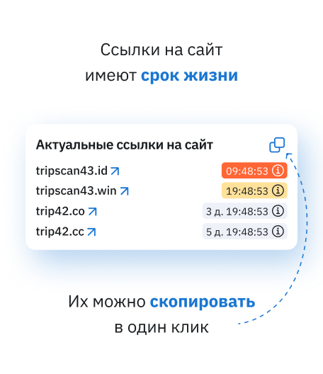

Турагентствам
Для контроля заявок, оплат, ваучеров, сроков вылета и статуса каждого клиента.
Санкт-Петербург + онлайн для регионов
Платформа помогает туристическому бизнесу и корпоративным командам видеть весь путь клиента: от заявки и документов до возвращения из поездки. Меньше ручных сверок, больше прозрачности для менеджера и руководителя.
Тур 48-19документы готовы
Группа Antalya6 туристов без ваучера
Маршрут SPB-MOW-DXBпересадка в норме
Кому подходит услуга
Для контроля заявок, оплат, ваучеров, сроков вылета и статуса каждого клиента.
Для мониторинга групп, направлений, изменений по отелям, перелётам и пакетным турам.
Для командировок, выездных мероприятий, лимитов, согласований и отчётности.
Для сложных маршрутов, чек-листов участников, коммуникаций и контроля документов.
Что именно вы делаете
Внутри карточки хранится маршрут, стоимость, туристы, документы, ответственные, каналы связи и история событий. Сервис подсвечивает то, что требует внимания: просроченный документ, риск задержки, превышение бюджета, неотвеченный комментарий или конфликт дат.


Цены, тарифы, калькулятор
2 недели, до 80 поездок, настройка правил, отчёт по эффекту.
До 700 поездок, роли, уведомления, отчёты, импорт таблиц и базовые интеграции.
Несколько офисов, API, BI, SSO, персональные регламенты и расширенный SLA.
Преимущества, но конкретные
Этапы работы
Фиксируем типы туров, роли, документы, частые проблемы и желаемые отчёты.
Подключаем таблицы, CRM, формы, API или ручной импорт для первого набора поездок.
Настраиваем события, уведомления, SLA, маршруты согласования и шаблоны сводок.
Проверяем на реальных турах, собираем обратную связь и считаем эффект для бизнеса.
Кейсы, портфолио, отзывы
Вынесли документы, трансферы и чек-листы участников в одну панель. Координатор стал видеть, кто не подтвердил маршрут и где нужен звонок.
Результат: минус 5 часов ручной сверки в неделю.Настроили историю поездок и уведомления о критичных изменениях. Менеджеры быстрее отвечают клиентам и меньше ищут данные в переписках.
Результат: 94% карточек без дублирования.“Трипскан помог увидеть не только поездки, но и слабые места процесса: где теряем документы, где поздно отвечаем, где часто меняется цена.”
Елена Р., владелец агентства
“Для нас ценность в тревожных событиях. Не надо открывать каждую заявку: сервис сам показывает, где нужен менеджер.”
Сергей П., руководитель направления
Гарантии и документы
FAQ
Да. Можно начать с пилота на 50-80 поездок и использовать только нужные блоки: статусы, документы, уведомления и отчёт.
Нет. Трипскан может работать рядом с CRM и таблицами: забирать данные, дополнять их мониторингом и возвращать отчёты.
Для уведомлений доступны email, Telegram и рабочие каналы команды. Клиентские сценарии согласуются отдельно, чтобы не отправлять лишние сообщения туристам.
Частота зависит от источника: ручной импорт обновляется по загрузке, API может работать по расписанию или почти в реальном времени.
Контакты, карта, мессенджеры
Офис: Санкт-Петербург, Невский проспект, 55. Работаем с клиентами из разных регионов онлайн. Для заявки достаточно описать объём поездок и текущий способ учёта.
 TripScan
TripScan